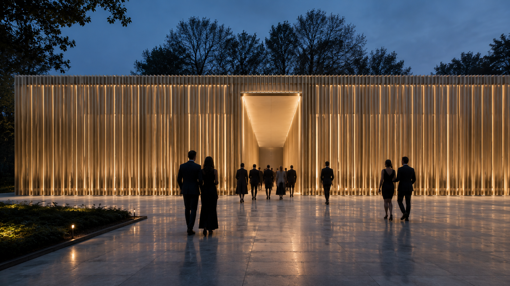

Kamerton.
One hall. Six events. One architecture.


Drag the slider: by day a solid bar with fine vertical graphics, at night the slots glow like staff lines.
“The Case”
A static metaphor named in the brief itself – dozens of entrants would use it. Rejected.
“The Machine”
Exposed tech aesthetics clash with the premium feel. Rejected.
«Kamerton»
Transformation, image, light and acoustics – all from one decision.
A real process artefact: three concepts developed before the choice

Everything mobile is held and moved by 10 portal ribs.
Plan: 10 portal ribs, a technical belt top and bottom, and the mobile elements (stage, tribunes, walls, ring) ride on rails. Guests never see the machinery.
| Event | Configuration | Guests | Rigging |
|---|---|---|---|
| Gallery | enfilade of mobile walls · RT 1.0 | 400 | 6 h |
| Product launch | ⌀12 m ring · three screens · blackout + beam | 250 | 4 h |
| Fashion show | 18 × 2 runway · backstage behind walls | 260 | 6 h |
| Concert | 12 × 8 stage + shell · RT 1.5 | 320 | 8 h |
| Lecture | 6 × 4 stage · screen · RT 0.9 | 200 | 3 h |
| Immersive | 36 prisms · 360° projection · timecode | – | 8 h |
Design parameters from the competition entry · changeover by a crew of 6 (author’s estimate)
Compression – then release: 3.6 m at the entrance, 9 m in the hall.
The section schematic draws itself as you scroll, next to the real presentation slide.


“Concert” scenario: five layers of light on the portals – not a single stand in the hall · ≈20 m³ of air per listener (design estimate, pending acoustic verification)

A solo two-week entry: concept, 12 slides, visualisations – one idea on every level.
One idea explains the image, mechanics, light and acoustics – the project stays coherent at every step. An AI pipeline helped test visual directions faster.
Published under a changed name; the competition venue is not disclosed.